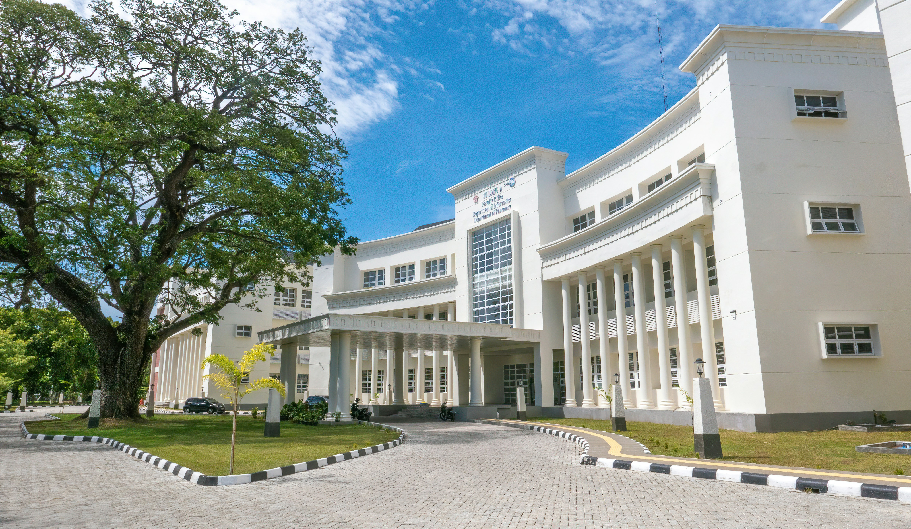
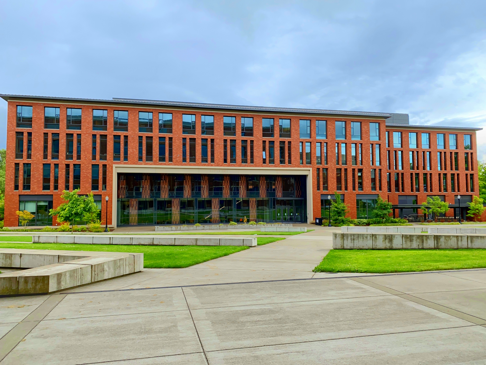

Our Global Campus
At FM University of Science and Art, we take pride in being a truly global institution. Our campus community brings together students, faculty, and researchers from around the world, creating a diverse environment that celebrates culture, collaboration, and innovation. With international partnerships and exchange programs spanning continents, our students gain exposure to global perspectives that prepare them to lead in an interconnected world. Whether it’s through study-abroad opportunities, virtual collaborations, or multicultural events on campus, FM University empowers learners to think beyond borders. Our modern facilities, digital classrooms, and vibrant student life make FMU not just a place of study but a hub for global learning, creativity, and personal growth. Experience a world of knowledge at FM University, where your future connects with the world.

NIGERIA

LONDON

NEW YORK
Our Facilities
At our school, we take pride in providing a safe, stimulating, and well-equipped learning environment that supports both academic excellence and personal growth. Our modern facilities are designed to meet the diverse needs of our students and to encourage creativity, collaboration, and exploration.

FM Class Library
The school library houses a rich collection of books, digital resources, and reference materials that cater to students of all grade levels. It offers a quiet and inviting space for reading, research, and independent study.

Largest Play Ground
We believe in the importance of physical fitness and teamwork. Our campus includes a large playground, sports fields, and indoor facilities for basketball, badminton, and table tennis.
Tasty and Healthy Food
Our clean and hygienic cafeteria offers nutritious meals and snacks, promoting healthy eating habits among students.
What Our Student Says
Teaching here is deeply rewarding. The school provides a positive, collaborative atmosphere where both students and staff are encouraged to learn and grow.
Being part of FM University of Science and Art has been a wonderful journey filled with learning, growth, and meaningful experiences. I appreciate all the teachers who inspired me to do my best and the friendships that made every moment special. I leave this school with gratitude, pride, and lasting memories.
Mogaha Chioma Vivian
My time at FM University of Science and Art has shaped me into a more responsible and determined person. I am thankful to my teachers for their guidance and to my classmates for their support. As I move forward, I will carry with me the values and lessons I’ve learned here.